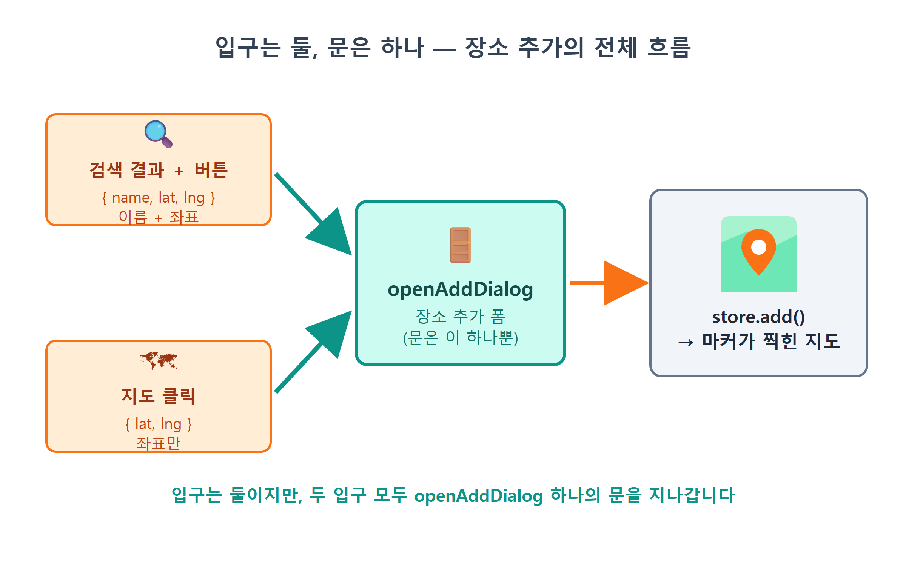
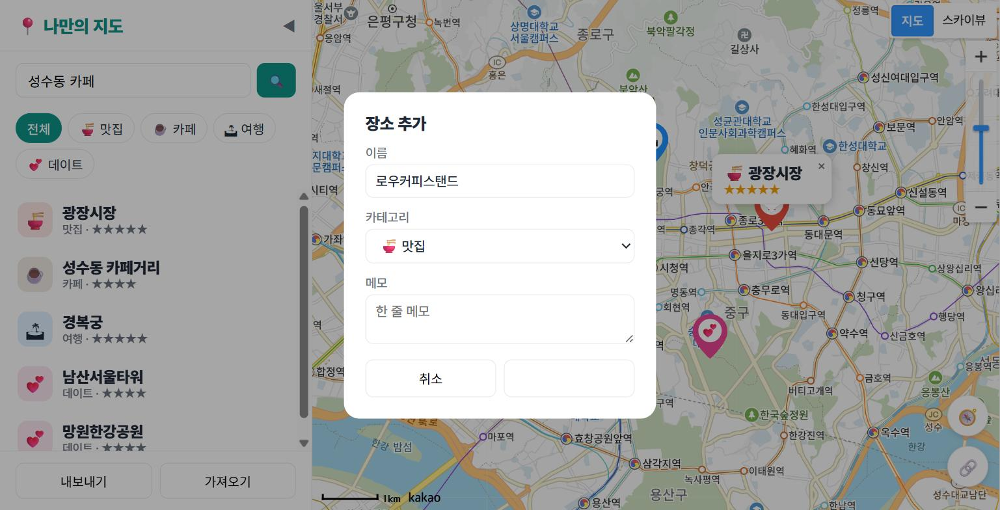
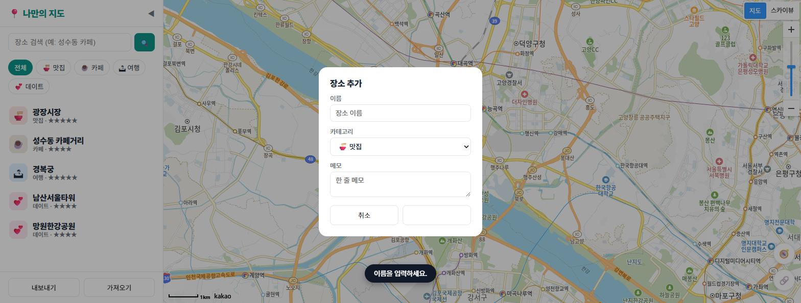
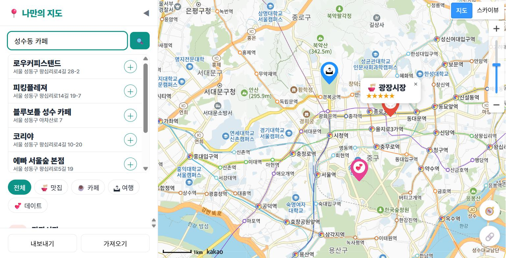
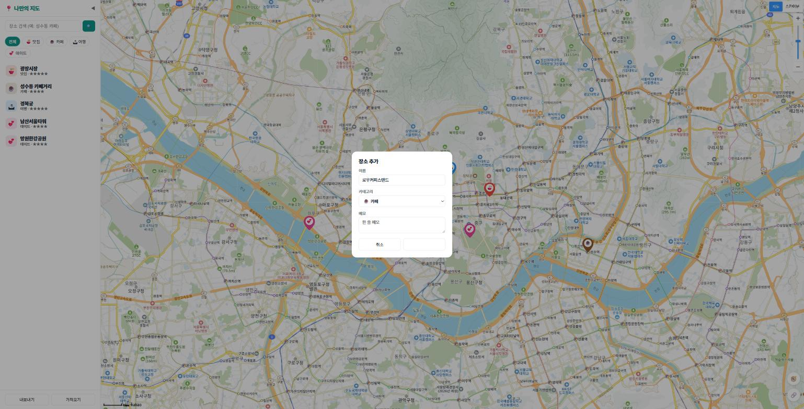
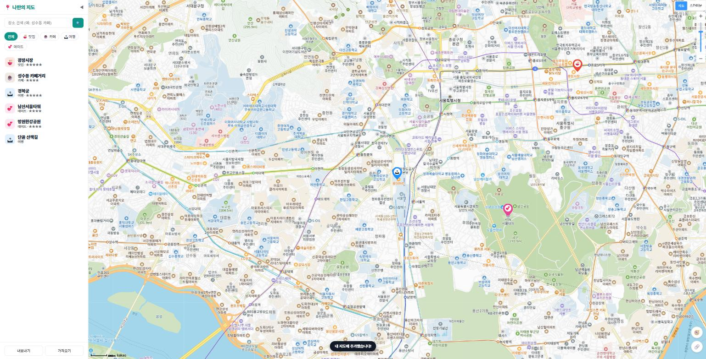

16장 클릭·검색으로 장소 추가¶
이 장에서 배우는 것
- 장소 데이터를
src/store.js저장소 모듈로 옮기고, 화면이store.all()을 보도록 데이터 원천을 바꿉니다 - 지도의 빈 곳을 클릭하면 장소 추가 다이얼로그가 열리게 만듭니다
- 검색 결과마다 ＋ 버튼을 달아, 같은 다이얼로그를 재사용합니다
- 폼 값 검증(이름 필수)으로 엉터리 데이터가 들어오는 것을 막습니다
store.add()와Date.now().toString(36)으로 겹치지 않는 id를 만듭니다- 이벤트 버블링을 이해하고, 클릭 영역 분리와
stopPropagation으로 클릭이 엉뚱한 곳까지 번지는 사고를 막습니다
15장 끝에서 우리는 일부러 아쉬움을 하나 남겨 두었습니다. 검색으로 성수동의 카페를 찾아 지도가 스르륵 이동까지 했는데, 정작 그 카페를 내 지도에 담을 방법이 없었습니다. 지도는 이동만 할 뿐, 마커도 데이터도 남지 않았죠. 12장에서 만든 기본 장소들만 덩그러니 있는 지도는 아직 카카오가 준 지도에 가깝습니다. 내 손으로 담은 장소가 하나도 없으니까요.
이번 장에서 그 벽을 넘습니다. 새 장소를 추가하는 입구를 두 개 만들 겁니다. 하나는 검색 결과 옆의 ＋ 버튼입니다. "어니언 성수"를 검색해서 ＋를 누르면 이름이 미리 채워진 입력 폼이 뜨고, 카테고리와 메모만 골라 저장하면 끝입니다. 다른 하나는 지도 클릭입니다. 이름은 몰라도 "여기 그 골목!"이라고 위치는 아는 장소가 있잖아요. 지도의 그 자리를 콕 찍으면 같은 폼이 열립니다. 저장 버튼을 누르는 순간 마커가 즉시 지도에 찍힙니다. 앱 개발자들이 흔히 CRUD1라고 부르는 네 가지 기본기 중 첫 글자, C(Create, 생성)를 오늘 완성합니다.
16.1 설계 먼저 — 입구는 둘, 문은 하나¶
코드를 시키기 전에 잠깐 설계 이야기를 하겠습니다. 방금 "입구를 두 개 만든다"고 했는데, 초보 시절에 하기 쉬운 실수가 바로 입구마다 문을 따로 만드는 것입니다. 검색 추가용 폼 하나, 지도 클릭용 폼 하나. 당장은 돌아가지만, 나중에 폼에 별점 칸을 하나 추가하고 싶어지면 두 군데를 고쳐야 합니다. 한쪽만 고치고 다른 쪽을 잊으면? 사용자는 "어떤 때는 별점이 있고 어떤 때는 없는" 이상한 앱을 만나게 됩니다.
그래서 우리는 처음부터 이렇게 설계합니다. 입구는 둘이지만 문은 하나. 장소 추가 다이얼로그를 여는 함수 openAddDialog를 딱 하나 만들고, 검색 ＋ 버튼도, 지도 클릭도 이 함수 하나를 호출하게 합니다. 두 입구의 차이는 함수에 넘기는 재료뿐입니다. 검색 결과에서 왔다면 이름과 좌표를 이미 알고 있으니 { name, lat, lng }를 넘기고, 지도 클릭에서 왔다면 좌표만 아니까 { lat, lng }만 넘깁니다. 이름 칸은 비워진 채 열리겠죠.

그림 16.1 — 입구는 둘, 문은 하나: 장소 추가의 전체 흐름
이렇게 "같은 일을 하는 코드는 한 곳에만 둔다"는 원칙을 개발자들은 재사용이라고 부릅니다. 사실 여러분은 이미 여러 번 경험했습니다. 9장에서 SDK 로드를 loader.js 한 곳에 모아 둔 덕분에 15장에서 확장팩을 붙일 때 한 줄만 고쳤고, 15장의 run 함수 하나를 버튼 클릭과 Enter 키가 함께 썼습니다. 바이브코딩에서도 이 원칙은 그대로 중요합니다. AI에게 "검색 추가 폼 만들어줘", "클릭 추가 폼 만들어줘"라고 따로따로 시키면 AI는 정말로 폼을 두 벌 만들어 버릴 수 있습니다. 공용으로 쓸 것이라고 처음부터 말해 주는 것, 그것이 기획자인 우리의 일입니다.
그런데 문을 달기 전에 먼저 해결해야 할 문제가 하나 더 있습니다. 새 장소를 추가하면 그 장소는 어디에 담기나요? 지금 우리 장소 데이터는 12장의 defaultPlaces.js가 수출하는 DEFAULT_PLACES 배열이고, 14장의 filteredPlaces()도 이 배열만 바라봅니다. 그런데 DEFAULT_PLACES는 이름 그대로 "기본 데이터"입니다. 여기에 새 장소를 마구 push하기 시작하면 기본과 추가분이 뒤섞여 버리죠. 추가·수정·삭제가 시작되는 지금이, 데이터를 도맡을 전담 창구를 만들 때입니다.
16.2 장소 데이터의 이사 — store 모듈 만들기¶
전담 창구의 이름은 src/store.js, 역할은 저장소(store)입니다. 장소 배열을 이 모듈 안으로 이사시키고, 바깥에서는 배열을 직접 만지는 대신 store가 내주는 창구(메서드)로만 데이터를 읽고 씁니다. 은행에 비유하면, 금고(배열)는 안쪽에 숨기고 창구 직원(all, add)을 통해서만 거래하는 구조입니다. Claude Code에게 시켜 봅시다.
🗣 이렇게 시키세요
src/store.js 모듈을 새로 만들어줘. defaultPlaces.js의 기본 장소 배열을 복사해서 places 변수에 담고, 두 가지 메서드가 있는 store 객체를 export 해줘. all()은 현재 장소 배열을 돌려주고, add(place)는 새 장소를 배열에 추가해줘. add에서 id는 'p' + Date.now().toString(36)으로 만들고, rating 0과 memo 빈 문자열을 기본값으로 채워줘. 그리고 sidebar.js의 filteredPlaces()가 DEFAULT_PLACES 대신 store.all()을 보도록 바꿔줘. localStorage 저장은 다음 장에서 붙일 거니까 아직 넣지 말아줘.
프롬프트 마지막 문장을 눈여겨보세요. "아직 넣지 말아줘"라고 범위를 잘라 주는 것도 훌륭한 프롬프트 기술입니다. AI는 친절이 지나쳐서 시키지 않은 저장 기능까지 한꺼번에 만들어 버리는 경우가 있는데, 그러면 우리가 코드를 따라 읽는 속도가 학습 속도를 추월해 버립니다. Claude Code가 만들어 준 src/store.js입니다.
// src/store.js — 장소 데이터 저장소 (이 장 시점 버전: 저장 기능은 17장에서 붙습니다)
import { DEFAULT_PLACES } from './defaultPlaces.js';
let places = [...DEFAULT_PLACES]; // 기본 데이터의 복사본으로 시작
export const store = {
all() {
return places;
},
add(place) {
const id = 'p' + Date.now().toString(36);
const item = { id, rating: 0, memo: '', ...place };
places.push(item);
return item;
},
};
let places = [...DEFAULT_PLACES]는 원본 배열을 그대로 쓰지 않고 스프레드(...)로 복사본을 만들어 시작합니다. 앞으로 이 배열에는 추가·수정이 일어날 텐데, 원본 DEFAULT_PLACES는 새것 그대로 보존해 두려는 것입니다(17장에서 이 복사가 한층 더 단단한 방식으로 업그레이드됩니다). all()은 현재 배열을 돌려주는 읽기 창구이고, add()가 오늘의 주인공인 쓰기 창구입니다. add() 속의 요술 같은 두 줄(toString(36) id와 ...place)은 폼과 연결하는 16.4절에서 찬찬히 뜯어보기로 하고, 지금은 이사부터 마무리합시다. sidebar.js의 바뀐 부분입니다.
// src/sidebar.js — 데이터 원천이 DEFAULT_PLACES에서 store로 바뀌었다
import { store } from './store.js';
export function filteredPlaces() {
const all = store.all();
return currentFilter === 'all' ? all : all.filter((p) => p.category === currentFilter);
}
14장에서 DEFAULT_PLACES를 직접 바라보던 filteredPlaces()가 이제 store.all()을 바라봅니다. 맨 위의 import { DEFAULT_PLACES } ...도 import { store } ...로 바뀌었습니다. 기본 데이터를 아는 것은 이제 store 하나뿐이고, 화면 쪽 코드는 "장소가 어디서 왔는지" 전혀 모릅니다. 이 한 수가 왜 중요하냐면 — 17장에서 데이터의 출처가 localStorage로 바뀔 때, 화면 쪽 코드는 한 줄도 고칠 필요가 없어지기 때문입니다. 출처가 무엇이든 store.all()이라는 창구는 그대로니까요.
저장하고 브라우저를 확인해 봅시다. 지도도 필터도 어제와 완전히 똑같이 동작하면 성공입니다. "고쳤는데 똑같다니?"라고 실망할 것 없습니다. 겉모습은 그대로 두고 속 구조만 바꾸는 작업을 개발자들은 리팩터링3이라고 부르는데, 리팩터링의 성공 판정 기준이 바로 "아무것도 달라 보이지 않을 것"입니다. 필터 버튼을 몇 개 눌러 보고, 콘솔에 에러가 없는지도 확인하세요. 이삿짐은 다 옮겼고 집은 멀쩡합니다. 이제 새 식구(추가 기능)를 들일 준비가 끝났습니다.
💡 팁
이 절처럼 "동작은 그대로, 구조만 변경"하는 작업을 시킬 때는 확인 직후에 커밋해 두는 것이 특히 중요합니다. 다음 절부터 기능이 얹히기 시작하면, 문제가 생겼을 때 "구조 변경 탓인지 새 기능 탓인지" 갈라 볼 수 있는 기준점이 되기 때문입니다. "장소 데이터를 store 모듈로 분리, 커밋해줘"라고 시켜 두세요.
16.3 장소 추가 다이얼로그 만들기¶
그럼 문부터 만들어 봅시다. 화면 한가운데에 카드처럼 뜨는 다이얼로그(대화상자)입니다. 이름·카테고리·메모를 입력받고, 추가/취소 버튼이 있습니다. 검색 기능과 짝을 이루는 기능이니 파일은 15장에서 만든 src/search.js에 이어서 담겠습니다. Claude Code에게 4요소(맥락·목표·제약·출력)를 갖춰 시켜 봅시다.
🗣 이렇게 시키세요
src/search.js에 openAddDialog 함수를 만들어서 export 해줘. { name, lat, lng }를 받아서 화면 가운데에 장소 추가 다이얼로그를 띄우는 함수야. 이름 입력칸(name이 있으면 미리 채움), 카테고리 select(🍜맛집 food, ☕카페 cafe, 🏝여행 travel, 💕데이트 date), 메모 textarea, 취소/추가 버튼을 넣어줘. 이 함수는 검색 결과 추가와 지도 클릭 추가 두 곳에서 공용으로 쓸 거야. 다이얼로그는 한 번에 하나만 열리게 하고, 반투명 배경으로 지도를 덮어줘. style.css에 스타일도 추가해줘.
프롬프트 마지막 문장들을 눈여겨보세요. "두 곳에서 공용으로 쓸 거야"라고 설계 의도를 밝혔고, "한 번에 하나만"이라는 제약도 미리 걸었습니다. Claude Code가 search.js를 고친 결과를 봅시다. 우선 파일 맨 위의 import 목록부터입니다. 15장에서 있던 두 줄에 store가 새로 합류해 석 줄이 됐습니다.
// src/search.js — 파일 맨 위 import (15장의 두 줄 + 이번 장의 store)
import { store } from './store.js';
import { escapeHtml, getMap } from './mapView.js';
import { toast } from './sidebar.js';
이 석 줄이 이번 장 코드 전체의 재료 목록입니다. escapeHtml과 toast는 15장부터 쓰던 낯익은 얼굴이고, store는 16.2절에서 만든 새 창구죠. 이제 파일 아래쪽에 추가된 다이얼로그를 만들어 띄우는 앞부분부터 봅시다.
// 장소 추가 폼 (검색 추가 + 지도 클릭 추가 공용)
export function openAddDialog({ name = '', lat, lng }) {
closeAddDialog();
const wrap = document.createElement('div');
wrap.id = 'add-dialog';
wrap.innerHTML = `
<div class="dialog-card">
<h2>장소 추가</h2>
<label>이름 <input id="add-name" value="${escapeHtml(name)}" placeholder="장소 이름" /></label>
<label>카테고리
<select id="add-category">
<option value="food">🍜 맛집</option>
<option value="cafe">☕ 카페</option>
<option value="travel">🏝 여행</option>
<option value="date">💕 데이트</option>
</select>
</label>
<label>메모 <textarea id="add-memo" rows="2" placeholder="한 줄 메모"></textarea></label>
<div class="dialog-actions">
<button id="add-cancel">취소</button>
<button id="add-ok" class="primary">추가</button>
</div>
</div>`;
document.body.appendChild(wrap);
한 줄씩 함께 읽어 봅시다.
{ name = '', lat, lng } — 함수의 인자 자리에서 객체를 바로 풀어 받고 있습니다. name = '' 부분은 기본값입니다. 지도 클릭처럼 name 없이 호출되면 자동으로 빈 문자열이 됩니다. 입구가 둘이어도 함수 하나가 감당할 수 있는 비결이 바로 이 기본값입니다.
closeAddDialog()가 첫 줄인 이유 — 새 다이얼로그를 만들기 전에, 혹시 떠 있을지 모르는 이전 다이얼로그부터 치웁니다. "한 번에 하나만"이라는 제약을 지키는 가장 단순한 방법은 열기 전에 무조건 닫기입니다. 13장에서 말풍선을 하나만 열리게 관리했던 것과 똑같은 발상이죠. 사실 잠시 뒤에 볼 CSS에서 배경막이 화면 전체를 덮기 때문에, 다이얼로그가 열린 동안에는 지도도 검색 결과도 클릭할 수 없어 두 겹이 쌓일 상황이 지금은 일어나지 않습니다. 그런데도 이 한 줄을 두는 것이 프로의 습관입니다. 나중에 배경막 디자인이 바뀌거나 다른 코드가 openAddDialog를 연달아 부르는 날이 와도, 이 함수는 스스로 "하나만"을 지켜 냅니다. 자기 규칙을 남에게 의존하지 않는 코드를 방어적 코드라고 부릅니다.
document.createElement + innerHTML — 이 다이얼로그는 index.html에 미리 써 두지 않았습니다. 필요한 순간에 자바스크립트로 <div>를 만들고(createElement), 그 속을 템플릿 문자열로 채운 뒤, document.body.appendChild(wrap)으로 화면에 붙입니다. 평소에는 존재하지도 않다가 부를 때만 나타나는 요소입니다.
value="${escapeHtml(name)}" — 검색 결과에서 넘어온 이름이 입력칸에 미리 채워지는 부분입니다. 그리고 여기에도 15장에서 만난 안전장치 escapeHtml이 있습니다. 장소 이름은 카카오 서버에서 온 바깥 데이터입니다. 바깥 데이터를 HTML에 끼워 넣을 때는 반드시 이 장갑을 낍니다. 이 습관이 왜 목숨줄인지는 19장에서 제대로 다룹니다.
닫는 쪽 함수는 짧습니다.
물음표가 붙은 ?.는 옵셔널 체이닝이라는 문법입니다. "다이얼로그가 있으면 지우고, 없으면 아무 일도 하지 말라"는 뜻입니다. 이게 없으면 다이얼로그가 안 떠 있을 때 null.remove()를 호출하다 에러가 납니다. 짧지만 방어가 들어 있는 한 줄입니다.
스타일은 style.css에 함께 들어갔습니다. 눈여겨볼 부분은 배경막입니다.
#add-dialog {
position: fixed; inset: 0; z-index: 50;
background: rgb(0 0 0 / 0.35);
display: flex; align-items: center; justify-content: center;
}
.dialog-card {
background: #fff; border-radius: 16px; padding: 22px; width: 320px;
display: flex; flex-direction: column; gap: 12px;
}
position: fixed와 inset: 0으로 화면 전체를 덮는 층을 만들고, 반투명 검정(rgb(0 0 0 / 0.35))을 깔았습니다. 다이얼로그 뒤의 지도가 어둑하게 비치면서 "지금은 이 폼에 집중하세요"라는 신호를 줍니다. 그 층을 flex 정중앙 정렬로 쓰니 하얀 카드가 화면 한가운데에 떠오릅니다.

그림 16.2 — 화면 가운데에 뜬 장소 추가 다이얼로그
16.4 폼 검증과 store.add — 추가 버튼의 속사정¶
문은 만들었는데 아직 손잡이가 없습니다. 취소·추가 버튼에 일을 시켜야죠. 다이얼로그 UI를 시켰던 프롬프트와는 별도로, 버튼의 동작을 한 번 더 시킵니다. "시키고 → 읽고 → 확인"의 리듬을 지키는 것입니다.
🗣 이렇게 시키세요
openAddDialog의 두 버튼에 동작을 달아줘. 취소 버튼은 다이얼로그를 닫기만 하면 돼. 추가 버튼은 이름을 trim해서 검증하고, 비어 있으면 toast로 "이름을 입력하세요."를 띄우되 다이얼로그는 닫지 말고 입력값을 유지해줘. 검증을 통과하면 이름·카테고리·메모·좌표를 store.add로 저장하고, "내 지도에 추가했습니다!" toast를 띄운 뒤 다이얼로그를 닫아줘. 그리고 장소가 추가되면 지도에 마커가 바로 나타나야 하니까, main.js의 rerender를 콜백으로 연결해서 추가 직후에 호출해줘.
Claude Code가 완성한 openAddDialog의 나머지 부분입니다.
wrap.querySelector('#add-cancel').addEventListener('click', closeAddDialog);
wrap.querySelector('#add-ok').addEventListener('click', () => {
const nameVal = wrap.querySelector('#add-name').value.trim();
if (!nameVal) {
toast('이름을 입력하세요.');
return;
}
store.add({
name: nameVal,
category: wrap.querySelector('#add-category').value,
memo: wrap.querySelector('#add-memo').value.trim(),
lat,
lng,
});
notifyChange(); // 데이터가 바뀌었으니 지도를 다시 그려 달라고 알린다 (이 장 시점의 다리)
toast('내 지도에 추가했습니다!');
closeAddDialog();
});
}
취소 버튼은 한 줄로 끝입니다. closeAddDialog를 그대로 리스너로 넘겼습니다. 추가 버튼이 이 절의 주인공입니다.
검증이 저장보다 먼저입니다. 추가 버튼의 첫 일은 저장이 아니라 검사입니다. value.trim()으로 양끝 공백을 잘라 낸 이름이 빈 문자열이면, toast로 "이름을 입력하세요."라고 알리고 return으로 끝냅니다. 15장 콜백의 문지기 검사와 같은 관용구입니다. 여기서 중요한 것은 return이 다이얼로그를 닫지 않는다는 점입니다. 폼은 입력값을 그대로 간직한 채 열려 있고, 사용자는 이름만 채워서 다시 누르면 됩니다. 틀렸다고 문전박대하며 처음부터 다시 쓰게 하는 폼은 나쁜 폼입니다.
왜 이름만 필수일까요? 좌표는 검증할 필요가 없습니다. 두 입구 모두 좌표를 이미 알고 다이얼로그를 열었기 때문입니다. 폼에 위도·경도 입력칸이 아예 없다는 점을 눈치채셨나요? 사용자에게 물어볼 필요가 없는 값은 폼에 올리지 않는 것이 좋은 설계입니다. lat, lng는 openAddDialog가 인자로 받아 둔 값을 클로저2로 기억하고 있다가 저장 시점에 그대로 씁니다. 카테고리는 select라서 어차피 넷 중 하나가 선택되어 있고, 메모는 없어도 그만인 값입니다. 결국 사용자가 망칠 수 있는 값은 이름뿐이고, 그래서 검증도 이름 하나면 충분합니다.
⚠️ 주의
검증 없이 store.add부터 호출하면 어떻게 될까요? 이름이 빈 장소가 데이터에 들어가고, 18장에서 만들 사이드바 목록에 "이름 없는 유령 장소"가 쌓이기 시작합니다. 잘못된 데이터는 들어오는 문 앞에서 막는 것이 가장 쌉니다. 일단 들어온 쓰레기 데이터를 나중에 골라내는 일은 몇 배로 고생스럽습니다.
검사를 통과하면 드디어 store.add({...})입니다. 폼의 값들을 좌표와 합쳐 객체 하나로 만들어 넘기고 있습니다. 이 store는 16.2절에서 이사를 마친 저장소 창구죠. 그때 "나중에 뜯어보자"고 미뤄 둔 add()의 속을 지금 열어 봅니다.
// src/store.js의 add — 16.2절에서 만든 그대로 (17장에서 이 끝에 저장이 한 줄 더 붙습니다)
add(place) {
const id = 'p' + Date.now().toString(36);
const item = { id, rating: 0, memo: '', ...place };
places.push(item);
return item;
},
짧지만 씹을 거리가 많은 코드입니다.
id는 왜 필요한가 — 12장에서 설계한 장소 스키마의 첫 필드가 id였습니다. 이름은 겹칠 수 있습니다. "스타벅스"를 두 개 저장하는 순간, 이름으로는 둘을 구별할 수 없죠. 19장에서 장소를 수정·삭제하려면 "정확히 이 장소"를 가리킬 주민등록번호가 필요하고, 그것이 id입니다.
Date.now().toString(36) — 그 id를 만드는 재치 있는 한 줄입니다. Date.now()는 1970년 1월 1일부터 지금까지 흐른 시간을 밀리초로 셉니다. 1772483920133처럼 13자리 숫자죠. 밀리초는 1초의 천분의 일이니, 사람이 손으로 장소를 추가하는 한 같은 값이 두 번 나올 일은 사실상 없습니다. 시간 자체가 겹치지 않는 번호표 노릇을 합니다. 뒤의 .toString(36)은 이 숫자를 36진수 문자열로 바꿉니다. 36진수는 숫자 10개(0–9)에 알파벳 26개(a–z)까지 동원해 한 자리를 표현하는 방식이라, 13자리 숫자가 pxk3q2l9 같은 8자리 문자열로 압축됩니다. 앞에 'p'(place의 p)를 붙이면 pmxk3q2l9 같은 형태의 최종 id가 됩니다. 콘솔에서 Date.now().toString(36)을 직접 실행해 보세요. 실행할 때마다 다른 값이 나오는 것을 눈으로 확인할 수 있습니다.
{ id, rating: 0, memo: '', ...place } — 점 세 개(...)는 스프레드 문법으로, place 객체의 필드를 그 자리에 쏟아 붓습니다. 순서가 절묘합니다. 기본값(rating: 0, memo: '')을 먼저 깔고 ...place를 나중에 쏟기 때문에, 폼에서 메모를 입력했다면 그 값이 기본값을 덮어쓰고, 입력하지 않은 필드는 기본값이 살아남습니다. 별점은 폼에 아예 없으니 항상 0으로 시작합니다(별점 매기기는 19장 상세 패널의 몫입니다). 어느 입구로 들어왔든, 이 한 줄을 통과하면 모든 장소가 12장 스키마를 온전히 갖춘 모습이 됩니다.
notifyChange() — 지도에게 소식을 전하는 다리 — 여기가 이번 절의 마지막 퍼즐입니다. store.add는 배열에 장소를 넣을 뿐, 화면은 스스로 갱신되지 않습니다. 14장에서 세운 단방향 원칙을 떠올려 보세요. 상태를 바꿨으면(store.add) 화면을 다시 그려야(rerender) 마커가 나타납니다. 그런데 rerender는 main.js에 사는 함수고, 이 코드는 search.js에 있죠. 그래서 14장의 onFilter와 똑같은 콜백 방식으로 다리를 놓습니다. search.js 위쪽에 콜백 보관 변수를 두고, initSearch가 받아 둡니다.
// src/search.js — 이 장 시점의 다리 (18장에서 구독 패턴으로 승격되며 걷어냅니다)
let notifyChange = () => {}; // 장소 데이터가 바뀌면 호출할 함수 (main.js가 넣어줌)
export function initSearch({ onChange }) {
notifyChange = onChange;
// ...15장에서 만든 검색 코드 그대로...
}
main.js 쪽은 호출부에 인자 하나가 늘었을 뿐입니다.
이 다리가 놓인 다음부터 "추가 버튼을 누르면 마커가 즉시 찍힌다"가 성립합니다. store.add만으로는 배열에만 쌓일 뿐 지도는 옛 그림 그대로거든요. 그리고 솔직히 말하면 이 다리는 임시 가설교입니다. 데이터가 바뀌는 곳이 늘어날 때마다 다리도 하나씩 더 놓아야 한다면 금방 번거로워지겠죠. 18장에서 "데이터가 바뀌면 화면이 알아서 따라오는" 구독 패턴으로 이 다리를 우아하게 대체합니다. 그때까지는 이 명시적인 한 줄이 단방향 흐름을 눈에 보이게 해 주는 좋은 교재입니다.

그림 16.3 — 이름을 비우고 추가를 누르면 뜨는 검증 토스트
16.5 검색 결과에 ＋ 버튼 달기¶
문이 완성됐으니 첫 번째 입구를 뚫읍시다. 15장의 검색 결과 목록에 ＋ 버튼을 답니다.
🗣 이렇게 시키세요
src/search.js의 renderResults를 수정해줘. 각 검색 결과 항목 오른쪽에 ＋ 버튼(내 지도에 추가)을 달고, 누르면 openAddDialog에 그 장소의 이름과 좌표를 넘겨서 열어줘. 기존의 "항목 클릭 → 지도 이동"은 이름·주소 영역을 클릭했을 때만 동작하게 유지하고, ＋ 버튼 클릭이 지도 이동까지 일으키면 안 돼. 추가 폼을 열면 검색 결과 목록은 숨겨줘.
여기서도 제약 조건이 핵심입니다. "＋ 클릭이 지도 이동까지 일으키면 안 돼" — 이 한 문장을 빼먹으면 높은 확률로 버그 있는 코드를 받게 됩니다. 왜 그런지는 코드를 보면서 설명하겠습니다. Claude Code가 고친 renderResults입니다.
function renderResults(items) {
resultsEl.hidden = false;
resultsEl.innerHTML = items
.map(
(item, i) => `
<li class="search-item" data-i="${i}">
<span class="search-info">
<strong>${escapeHtml(item.place_name)}</strong>
<small>${escapeHtml(item.road_address_name || item.address_name || '')}</small>
</span>
<button class="btn-add" title="내 지도에 추가">＋</button>
</li>`
)
.join('');
resultsEl.querySelectorAll('.search-item').forEach((li) => {
const item = items[Number(li.dataset.i)];
const lat = Number(item.y);
const lng = Number(item.x);
// 결과 클릭 → 지도 이동
li.querySelector('.search-info').addEventListener('click', () => {
getMap().setLevel(3);
getMap().panTo(new kakao.maps.LatLng(lat, lng));
});
// ＋ 클릭 → 내 지도에 추가
li.querySelector('.btn-add').addEventListener('click', (e) => {
e.stopPropagation();
openAddDialog({ name: item.place_name, lat, lng });
resultsEl.hidden = true;
});
});
}
15장 코드와 달라진 곳을 짚어 봅시다. <li> 안에 .btn-add 버튼이 추가된 것은 예상대로인데, 그보다 조용하지만 중요한 변화가 하나 더 있습니다. 15장에서는 지도 이동 클릭이 <li> 전체에 달려 있었죠(li.addEventListener('click', ...)). 그런데 지금 코드는 이동 리스너를 이름·주소를 감싼 <span class="search-info">로 옮겨 달았습니다. 왜 AI가 굳이 이렇게 고쳤을까요?
15장 코드를 그대로 두고 ＋ 버튼만 얹었다고 상상해 봅시다. 그 순간 버그가 태어납니다. 브라우저에서 클릭 이벤트는 클릭된 요소에서 끝나지 않고 부모로, 그 부모로 물속의 거품처럼 위로 번져 올라갑니다. 이것을 이벤트 버블링(bubbling)이라고 부릅니다. ＋ 버튼은 <li>의 자식이므로, ＋를 클릭하면 그 클릭이 <li>에게도 전달됩니다. <li>에 이동 리스너가 달려 있다면? ＋를 눌렀는데 다이얼로그가 열리는 동시에 지도까지 이동해 버리는 어리둥절한 상황이 벌어지는 겁니다. 우리가 프롬프트에 "＋ 클릭이 지도 이동까지 일으키면 안 돼"라고 못 박은 이유가 바로 이것입니다.
이 문제의 정공법이 지금 코드에 들어 있는 클릭 영역 분리입니다. 이동 리스너를 <li>가 아니라 .search-info에 달면, ＋ 버튼은 .search-info의 자식이 아니라 형제이므로 ＋에서 출발한 거품이 아무리 위로 올라가도(li → ul → ...) .search-info를 지나가지 않습니다. 버블링은 부모 방향으로만 번지지, 옆집(형제)으로는 번지지 않거든요. 두 클릭의 영토를 아예 갈라 버린, 구조로 푸는 해법입니다.
그럼 ＋ 리스너 첫 줄의 e.stopPropagation()은 뭘까요? "이 클릭은 여기서 소화했으니 위로 올려 보내지 마"라고 번짐을 끊는 명령입니다. 영역 분리가 이미 문제를 해결했으니 지금 구조에서는 이 줄이 없어도 지도는 움직이지 않습니다. 즉, 이 한 줄은 보험입니다. ＋의 클릭은 여전히 <li>와 <ul>로 번져 올라가고 있고, 나중에 누군가(미래의 우리, 혹은 AI가) <li>나 목록 전체에 클릭 리스너를 다시 다는 순간 잠자던 버그가 깨어납니다. 그 가능성을 문장 하나로 미리 막아 둔 것이죠. 버튼 속의 버튼, 목록 속의 버튼을 만들 때는 "영역을 나눠 달고, 안쪽 버튼에서는 번짐을 끊는다"를 한 세트로 기억해 두세요.
마지막의 resultsEl.hidden = true는 UX 다듬기입니다. 다이얼로그가 열리는데 뒤에 검색 결과 목록까지 계속 떠 있으면 화면이 어수선하니, 추가 폼을 여는 순간 목록을 접습니다.

그림 16.4 — 검색 결과마다 달린 ＋ 버튼
브라우저에서 확인해 봅시다. "성수동 카페"를 검색하고 한 항목의 ＋를 누르면, 검색 목록이 사라지면서 다이얼로그가 뜹니다. 이름 칸에 그 카페의 이름이 미리 채워져 있는 것이 포인트입니다. openAddDialog({ name: item.place_name, ... })로 넘긴 이름이 16.3절의 value="${escapeHtml(name)}" 자리에 꽂힌 결과입니다. 카테고리는 첫 옵션인 🍜 맛집으로 열리니, select를 눌러 ☕ 카페로 바꾸고 추가를 누르면 — 토스트가 뜨고, 지도에 새 마커가 즉시 찍힙니다. 16.4절에서 놓은 notifyChange 다리가 제 몫을 하는 순간입니다.

그림 16.5 — ＋를 누르면 이름이 미리 채워진 다이얼로그가 열린다
16.6 지도 클릭으로 추가하기¶
두 번째 입구는 허무할 만큼 쉽습니다. 문(openAddDialog)이 이미 있으니, 지도 클릭과 문을 연결만 하면 됩니다. 기억을 되살려 보면, 10장 미니 실습에서 우리는 지도를 클릭하면 콘솔에 좌표를 찍어 본 적이 있습니다. 그때 "이 좌표로 나중에 재미있는 걸 한다"고 예고했었죠. 그 나중이 바로 지금입니다.
🗣 이렇게 시키세요
main.js에 지도 click 이벤트 리스너를 달아줘. 클릭한 지점의 위도·경도를 얻어서 search.js의 openAddDialog를 좌표만 넘겨서 열어줘. 이름은 비운 채로.
Claude Code가 main.js에 추가한 코드는 단 세 줄입니다. import 문에 openAddDialog가 추가된 것까지 합쳐도 네 줄이죠.
import { initSearch, openAddDialog } from './search.js';
// ... 지도 생성과 initSearch({ onChange: rerender }) 호출 뒤 ...
// 지도 클릭 → 장소 추가
kakao.maps.event.addListener(map, 'click', (e) => {
openAddDialog({ lat: e.latLng.getLat(), lng: e.latLng.getLng() });
});
kakao.maps.event.addListener는 10장에서 배운 카카오지도의 이벤트 등록 방법 그대로입니다. 클릭 이벤트 객체 e의 latLng 속성에 클릭 지점의 좌표가 들어 있고, getLat()·getLng() 메서드로 위도·경도를 꺼냅니다. 10장에서는 이 값을 console.log로 흘려보냈지만, 오늘은 openAddDialog에 담아 보냅니다. name은 넘기지 않았으니 16.3절에서 본 기본값 name = ''이 작동해서 이름 칸이 빈 다이얼로그가 열립니다. 추가 버튼의 속은 이미 완성되어 있으니(검증 → store.add → notifyChange), 이 입구에서 들어온 장소도 저장 즉시 마커가 찍힙니다. 콘솔 실습이 실전 기능이 되는 순간입니다.
이제 이 장의 전체 흐름을 처음부터 끝까지 확인해 봅시다. 브라우저를 새로고침하고 순서대로 해 보세요.
- 검색 추가 — "성수동 카페" 검색 → ＋ 클릭 → 이름이 채워진 폼 → 카테고리 ☕ 선택 → 추가. 지도에 ☕ 마커가 찍히고 "내 지도에 추가했습니다!" 토스트가 뜹니다.
- 클릭 추가 — 지도에서 아무 골목이나 클릭 → 빈 폼 → 이름에 "단골 산책길" 입력 → 카테고리 🏝 → 추가. 클릭했던 그 자리에 마커가 찍힙니다.
- 검증 — 지도를 클릭해 폼을 열고, 이름을 비운 채(또는 공백만 입력하고) 추가 클릭 → "이름을 입력하세요." 토스트가 뜨고 폼은 그대로 남아 있습니다.
- 취소와 영역 분리 — 폼을 연 채 취소를 눌러 깔끔히 닫히는지 확인합니다. 그리고 다시 검색해서 이번에는 ＋가 아니라 이름·주소 영역을 클릭 — 다이얼로그 없이 지도만 이동하고, ＋를 클릭했을 때는 지도가 움직이지 않고 다이얼로그만 열리는지, 두 클릭 영역이 서로를 침범하지 않는지 확인합니다.

그림 16.6 — 지도 클릭으로 추가한 장소에 마커가 찍힌 모습
네 가지가 모두 통과했다면 축하합니다. 여러분의 지도는 이제 자라는 지도입니다. 카카오의 전국 데이터베이스에서 골라 담을 수도 있고, 지도 위 어디든 콕 찍어 나만 아는 장소를 새길 수도 있습니다.
💡 팁
＋ 버튼을 눌렀는데 다이얼로그와 함께 지도까지 움직인다면, 십중팔구 이동 리스너가 15장처럼 <li> 전체에 달려 있는 것입니다(AI가 영역 분리를 빼먹은 경우죠). 추가를 눌렀는데 마커가 안 찍힌다면 notifyChange 다리(initSearch({ onChange: rerender }))가 연결됐는지 보고, 추가한 마커가 필터와 안 맞게 보인다면 filteredPlaces()가 store.all()을 보는지 확인하세요. 증상만 보고도 원인 코드를 짚을 수 있게 되는 것 — 그것이 AI가 짠 코드를 "함께 읽어 온" 사람의 힘입니다. 원인을 짚었으면 고치는 일은 Claude Code에게 시키면 됩니다. "＋ 버튼 클릭이 지도 이동까지 일으켜. 이동 리스너가 li 전체에 달려 있는 것 같은데 search-info 영역으로 옮겨줘."
다만 한 가지, 김이 새는 실험이 남았습니다. 방금 추가한 "단골 산책길"이 지도에 잘 찍혀 있죠? 이제 브라우저를 새로고침해 보세요. ...사라졌습니다. 애써 담은 장소들이 흔적도 없이 증발하고 12장의 기본 장소들만 남았습니다. 우리의 데이터가 아직 브라우저의 기억(메모리)에만 있었기 때문입니다. 메모리는 새로고침 한 번에 백지가 되는 칠판입니다. 이 허무함은 다음 장에서 해결합니다.
16.7 마무리¶
📌 핵심 요약
- 장소 데이터의 창구는 이제
src/store.js하나입니다.filteredPlaces()는DEFAULT_PLACES대신store.all()을 바라보고, 화면은 데이터의 출처를 모릅니다. - 장소 추가의 입구는 둘(검색 ＋ 버튼, 지도 클릭)이지만, 다이얼로그를 여는 함수는
openAddDialog하나를 재사용합니다. 같은 일을 하는 코드는 한 곳에만 둡니다. - 저장 전에 검증이 먼저입니다. 이름이 비었으면 toast로 알리고
return— 단, 다이얼로그는 닫지 않고 입력값을 보존합니다. store.add는'p' + Date.now().toString(36)으로 겹치지 않는 id를 만들고, 기본값 뒤에...place를 펼쳐 스키마를 완성합니다. 데이터를 바꾼 뒤에는notifyChange다리로rerender()를 불러야 마커가 나타납니다(18장에서 구독 패턴으로 승격됩니다).- 클릭 이벤트는 부모로 번져 올라갑니다(버블링). 안쪽 버튼의 정공법은 클릭 영역 분리(이동은
.search-info, 추가는.btn-add)이고,e.stopPropagation()은 미래의 조상 리스너를 대비한 보험입니다. - 지도 클릭 좌표는
e.latLng.getLat()/e.latLng.getLng()로 얻습니다. 10장의 콘솔 실습이 그대로 실전 기능이 됐습니다.
🤔 생각해보기
Q1. 검색 추가용 폼과 클릭 추가용 폼을 따로 두 벌 만들었다면, 앞으로 어떤 순간에 어떤 문제가 생길까요? 구체적인 상황을 하나 상상해서 적어 보세요.
✍️ ________
✍️ ________
Q2. id를 Date.now() 대신 "장소 이름"으로 쓰면 어떤 문제가 생길까요? 또, 같은 밀리초에 장소 두 개가 추가될 수 있는 상황(사람이 아닌 코드가 추가한다면?)도 상상해 보세요.
✍️ ________
✍️ ________
✏️ 연습 문제
- 콘솔에서
Date.now().toString(36)을 세 번 실행해 값이 매번 달라지는 것을 확인하고,(1234567890).toString(36)과(1234567890).toString(16)도 비교해 보세요. - ＋ 버튼 리스너에서
e.stopPropagation()한 줄을 잠시 지우고 ＋를 눌러 보세요. 지도가 움직이나요? 아무 변화가 없다면 그 이유를 16.5절의 클릭 영역 분리로 설명해 보고, "그런데도 이 줄을 남겨 두는 이유"를 한 줄로 적은 뒤 원래대로 되돌리세요. (직접 지워도 좋고, Claude Code에게 시켜도 좋습니다.) - 다이얼로그의 배경막(어두운 부분)을 클릭하면 취소와 똑같이 닫히도록 Claude Code에게 시켜 보세요. 힌트: 클릭된 대상이
#add-dialog자신일 때만 닫아야 카드 안쪽 클릭으로는 닫히지 않습니다. - 메모를 200자 넘게 입력하면 toast로 경고하고 저장을 막는 검증을 추가해 보고, 확인 후 되돌리세요.
🔎 더 찾아보기
<dialog>요소 — HTML에 내장된 진짜 다이얼로그 태그.showModal()메서드와::backdrop가상 요소로 우리가 손수 만든 배경막을 공짜로 얻을 수 있습니다.submit 이벤트와 required 속성—<form>으로 감싸면 브라우저가 기본 제공하는 폼 검증. 우리가 만든 자바스크립트 검증과 비교해 보세요.crypto.randomUUID()— 브라우저에 내장된 고유 id 생성기.Date.now()방식보다 충돌 걱정이 원천적으로 없는 표준 도구입니다.이벤트 캡처링(capturing)— 버블링과 반대로, 이벤트가 조상에서 자손으로 내려오는 단계.addEventListener의 세 번째 인자와 관련이 있습니다.
다음 장 예고 — 애써 추가한 장소가 새로고침 한 번에 증발하는 허무함, 방금 겪으셨죠? 17장에서는 브라우저에 내장된 저장 공간 localStorage로 데이터를 영속화합니다.
store.js를 처음부터 끝까지 해부하면서 JSON 직렬화, 저장이 실패하는 경우의 방어, 그리고 내 데이터를 파일로 내보내고 가져오는 백업 기능까지 만듭니다. 새로고침해도, 컴퓨터를 껐다 켜도 남아 있는 진짜 "나만의 지도"가 됩니다.
-
CRUD — 데이터를 다루는 네 가지 기본 동작인 Create(생성)·Read(읽기)·Update(수정)·Delete(삭제)의 머리글자. 이 책에서는 16장(C), 18장(R), 19장(U·D)에 걸쳐 완성합니다. ↩
-
클로저(closure) — 함수가 자기가 만들어질 때 주변에 있던 변수를 계속 기억하는 성질. 버튼 리스너가 나중에 실행되어도
openAddDialog가 받았던lat·lng를 그대로 쓸 수 있는 이유입니다. ↩ -
리팩터링(refactoring) — 겉으로 보이는 동작은 바꾸지 않으면서 코드의 내부 구조를 개선하는 작업. 기능 추가 전에 구조를 정리해 두면 이후 변경이 쉬워집니다. ↩